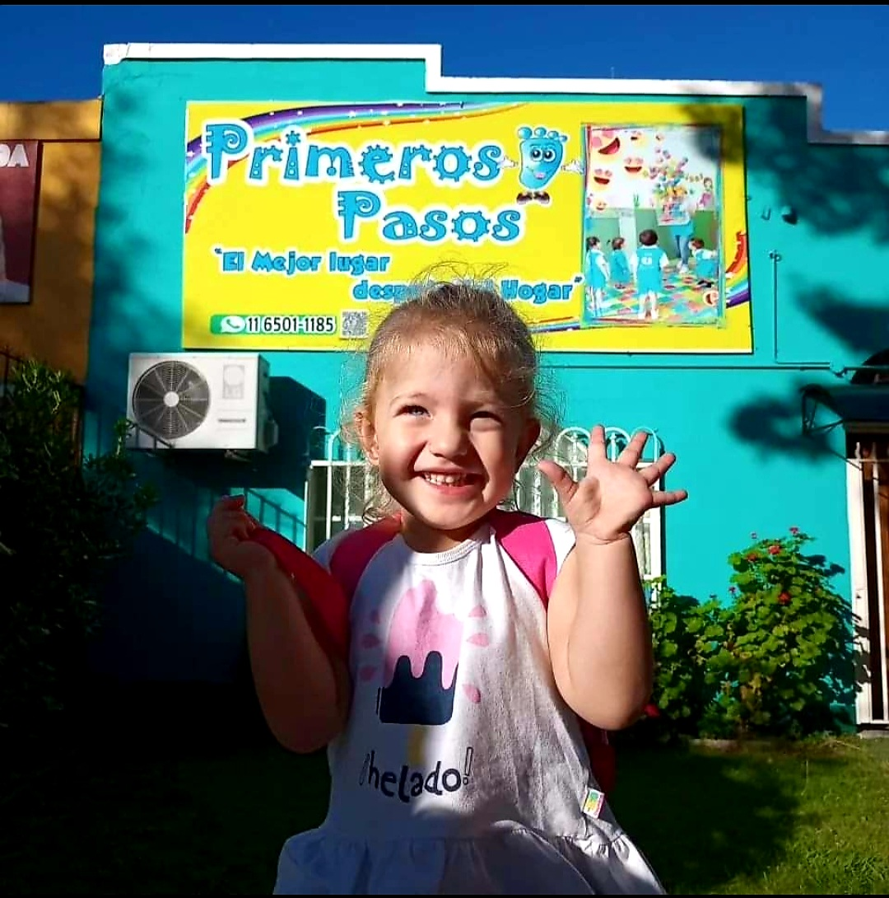
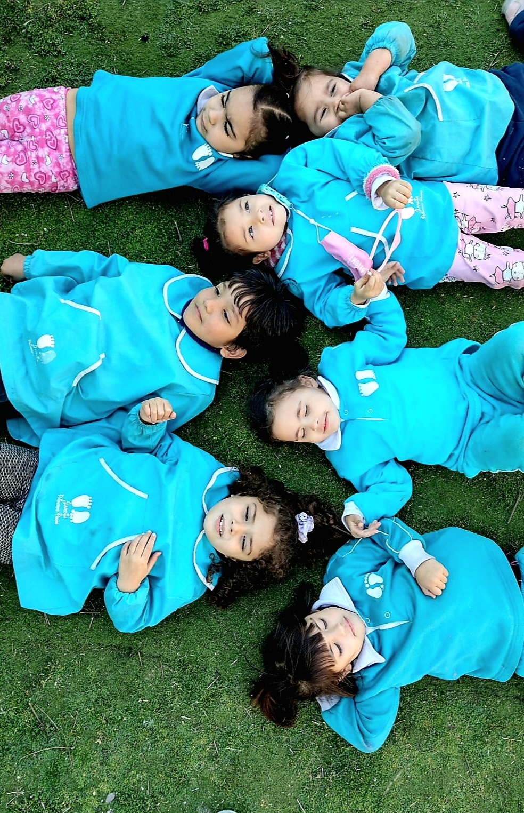

El Mejor Lugar Después del Hogar
Educación inicial para niños/as desde 18 meses hasta 4 años inclusive. Grupos organizados por edad y maduración, con seguimiento personalizado de cada etapa evolutiva.
Respuesta en menos de 10 minutos
¿Por Qué Elegir Primeros Pasos?
Nos diferenciamos por nuestro compromiso pedagógico con cada familia
Grupos por Maduración
Organizamos grupos reducidos según edad cronológica y nivel de maduración individual. Esto garantiza una propuesta pedagógica adaptada a cada etapa evolutiva.
Equipo Especializado
Alimentación Personalizada
Cada familia envía la vianda de su hijo/a, respetando hábitos alimentarios individuales. Disponemos de heladera y microondas para conservación segura.
Seguridad Integral
Cámaras de seguridad monitoreadas desde secretaría. Protocolo de emergencias actualizado y seguro contra accidentes incluido. Tu tranquilidad es nuestra prioridad.
2 Sedes Cómodas
Ubicaciones estratégicas en San Miguel. Elegí la más cercana a tu hogar o trabajo para mayor comodidad en tu rutina diaria.
Horarios Flexibles
Turno mañana (9-12hs), tarde (13-16hs) o jornada completa (8-17hs). Adaptá el horario según las necesidades de tu familia y el ritmo de tu hijo/a.
Nuestro Equipo
Profesionales comprometidos con el desarrollo integral de cada niño/a

Somos un equipo de profesionales con más de 10 años de experiencia en educación inicial, comprometidos con el crecimiento y bienestar integral de cada niño/a.
Nuestro equipo incluye:
- • Profesoras de Nivel Inicial con título habilitante y especialización en primera infancia
- • Actividades extracurriculares: música, expresión corporal y arte plástica
- • Auxiliares capacitadas en primeros auxilios y contención emocional
Lo Que Dicen Nuestras Familias
La tranquilidad y confianza de quienes ya nos eligieron
"Desde el primer día sentimos la calidez y profesionalismo del equipo. Mi hija se adaptó rapidísimo y hoy va feliz todos los días. Las seños realmente se preocupan por cada detalle del desarrollo de los chicos."
"Lo que más valoro es la comunicación constante. Todos los días me cuentan cómo estuvo mi hijo, qué comió, cómo jugó. Me voy a trabajar tranquila sabiendo que está en buenas manos y bien cuidado."
"El acompañamiento en el control de esfínteres fue fundamental. Respetaron los tiempos de nuestra hija sin presiones. El equipo psicopedagógico es excelente y nos orientó en cada etapa."
¿Querés conocernos en persona?
Agendá una visita sin compromiso. Te mostramos las instalaciones, te presentamos al equipo y respondemos todas tus dudas sobre nuestra propuesta pedagógica.
Agendar VisitaPreguntas Frecuentes
Resolvemos tus dudas de forma clara y categórica
¿Qué edades reciben?
Recibimos niños y niñas desde los 18 meses hasta los 4 años inclusive. Organizamos las salas respetando tanto la edad cronológica como el nivel madurativo de cada niño/a, para garantizar un acompañamiento pedagógico acorde a su desarrollo integral y prepararlo gradualmente para la integración a la educación formal.
¿Qué opciones de horarios ofrecen?
Ofrecemos flexibilidad horaria para adaptarnos a las necesidades de cada familia:
• Turno Mañana: 9:00 a 12:00 hs
• Turno Tarde: 13:00 a 16:00 hs
• Jornada Completa: 8:00 a 17:00 hs
Trabajamos de lunes a viernes. La elección del horario se adapta al ritmo y necesidades evolutivas de tu hijo/a, así como a la organización de tu familia.
¿Cómo funciona la alimentación?
Para respetar las preferencias alimentarias y necesidades nutricionales individuales de cada niño/a, cada familia envía la vianda de su hijo/a.
El jardín cuenta con heladera y microondas para conservar y calentar los alimentos de manera segura e higiénica. Este sistema nos permite respetar dietas especiales, intolerancias, alergias y los hábitos alimentarios particulares de cada familia, garantizando el bienestar de cada niño/a.
¿Trabajan con niños/as con pañales?
Sí, acompañamos el proceso de control de esfínteres de manera respetuosa, siguiendo el ritmo evolutivo de cada niño/a y en trabajo conjunto con las familias. Entendemos que cada niño/a tiene sus propios tiempos madurativos y respetamos ese proceso sin presiones, brindando contención y estímulo adecuado a cada etapa.
¿Cómo organizan los grupos?
Organizamos grupos reducidos según edad cronológica y nivel de maduración de cada niño/a. Esto nos permite ofrecer una propuesta pedagógica adaptada a las necesidades evolutivas de cada etapa, preparándolos gradualmente para su integración a la educación formal.
Cada grupo trabaja con docentes especializadas en primera infancia, garantizando acompañamiento personalizado y atención a los ritmos individuales de aprendizaje, socialización y desarrollo emocional de cada niño/a.
¿Puedo visitar antes de inscribir?
¡Por supuesto! Agendá una entrevista por WhatsApp y vení a conocer nuestras instalaciones, equipo y propuesta pedagógica sin ningún compromiso. Es fundamental que te sientas seguro/a y confiado/a con el lugar donde va a crecer tu hijo/a. Te mostraremos las salas, el espacio de recreación y te explicaremos nuestra metodología de trabajo.
¿Qué documentación necesito para inscribir?
Para formalizar la inscripción necesitás:
• DNI del niño/a (fotocopia)
• Carnet de vacunación actualizado
• Certificado médico de aptitud física
• Fotocopia de obra social (si tuvieras)
Te orientamos en todo el proceso de inscripción para que sea simple y rápido.
¿Tienen vacantes disponibles?
La disponibilidad de vacantes varía según la época del año, la edad del niño/a y la sede. Te recomendamos consultar por WhatsApp para conocer la disponibilidad actualizada en cada ubicación y para el horario que necesitás. Respondemos consultas todos los días.
¿Tenés otra consulta?
Escribinos por WhatsApp